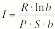

Christopher J. Osburn
NOTE: All figures are decimal unless
otherwise indicated.
arithmetic, n. 1.
The mathematics of integers under addition, subtraction, multiplication,
division, involution [roots] and
evolution [powers]. 2.
Computation or problem solving involving real numbers and the arithmetic
operations....
--The American Heritage Dictionary, Second College Edition, 1982
We all do arithmetic. We do it in the supermarket when providing for our
families. We do it on the highway when comparing our speed with the posted
limits (sometimes). We do it in the restaurant when determining how much of a
tip to leave on the table, or whether we'll have to wash dishes to pay for the
meal. Arithmetic, and mathematics as a whole, is always around us from the most
mundane tasks to the most embarrassing and profound situations.
With some minor exceptions we perform arithmetic operations in decimal, base
ten. But is base ten really the best way to do arithmetic? Are calculations
easier to perform in some other base, say twelve or sixteen? Let us take a
brief look at some of the inherent advantages and disadvantages of the use of
alternate number bases in arithmetic, starting with our tried and true friend,
base ten.
The primary advantage that base ten gives us is that we're accustomed to it.
The most popular explanation is that we have ten fingers on our hands. We are
able to match our fingers to up to ten of some other object. Counting the
number of times we can do this before we run out of whatever we were counting
allows us to use numbers greater than ten. Some cultures, for similar reasons,
have used number systems of five and twenty (the latter by calling the toes into
play). [1] There are some disadvantages that are
immediately apparent in these bases. Base five, for instance, is a fairly small
base, which leads to long strings of numerals even for small values. (Compare
one hand and three fingers (13five) to eight fingers (8ten)
Base twenty has the problem that very few of us can bend our toes independently
of the others. Peoples in colder climes may have to remove shoes or moccasins
to do any such counting. Whatever the reason, our familiar decimal system
predominates.
There are some notable exceptions. Ancient Sumerians and Babylonians used a
base sixty system of enumeration, sexagesimal, in connection with the
place-value system. Each
sexagesimal place, however, was constructed of cuneiform symbols giving the
number of tens and units for that place.[2] Some Northern
European societies had a quantity known as a "great hundred" made up
of ten dozens (120), reflecting the rudiments of a duodecimal (base twelve) counting
system. [3] The Romans, even though they used base ten for
their integer counting, had a system of duodecimal fractions. It is believed
they chose this because of easy divisibility in so many different ways. [4]
Despite our use of the decimal system for many millennia, there is something
that requires us to consider non-decimal enumerating: the electronic digital
computer.
Computers, at their lowest levels of operation, know only whether a current
is flowing through a transistor or not.
This off/on choice leads us to the binary (base two) system of
numeration. But while computers have little problem working in binary, for
humans it can be a bit cumbersome. For example:
842ten = 1101001010two
As you can see, relatively small numbers in decimal produce some real
monster-sized binary numbers. To cope, we have developed some convenient
shortcuts. By converting binary numbers into octal (base 8) or hexadecimal
(base 16) numbers, we make binary numbers more manageable for humans. This is
actually quite easy. Taking our example from above,
1101001010two
we divide the number up three places at a time from the right,
1 101 001 010
and then convert each group of three into single octal digits by finding the
decimal values that correspond to each place:
|
1 |
101 |
001 |
010 |
|
1 |
5 |
1 |
2 |
This gives us:
842ten = 1512eight
The process for converting binary into hexadecimal is similar; start by
dividing the number into four digit groups:
11 0100 1010
and insert the appropriate values:
|
11 |
0100 |
1010 |
|
3 |
4 |
10 |
This leads to a bit of a problem. How do we squeeze that 10 into a single
digit? The current usage in the computer industry is to represent the values
ten through fifteen by the letters “A” through “F”: “A” equals 10, “B” equals
11, etc. Our conversion from above then becomes:
|
11 |
0100 |
1010 |
|
3 |
4 |
A |
giving us
842ten = 34Asixteen
We have so far come across several different numbering systems, which we can
categorize as follows:
We have also seen that some bases are good for humans while others are good
only for computers. Is there some
way we can quantify the usefulness of these systems (for humans) so that we can
compare them? Which of these bases is really the best for counting and
arithmetic?
One way of comparing number bases is to compare some of their divisibility
indicators. For example, a divisibility indicator in base ten would be the fact
that all numbers divisible by five end in a zero or a five digit. Easy rules like this are one way we
make counting and arithmetic easy on ourselves. George Terry, in his book Duodecimal
Arithmetic, suggests tests to help identify
prime numbers and perfect squares. [5]
Let us take a quick look at the divisibility rules first. We will
concentrate on the
"easy" rules (hard rules aren’t that valuable to humans).
We’ll restrict ourselves to numbers less than the base number itself.
|
Base 2: |
|
|
|
|
|
A number is even if it ends in 0, odd if it ends in 1 |
|
Base 5: |
|
|
|
|
2: |
Any number whose digits add to a multiple of 2 |
|
|
4: |
Any number whose digits add to a multiple of 4 |
|
Base 8: |
|
|
|
|
2: |
Any number ending in an even digit |
|
|
4: |
Any number ending in 0 or 4 |
|
|
7: |
Any number whose digits add to a multiple of 7 |
|
Base 10: |
|
|
|
|
2: |
Any number ending in an even digit |
|
|
3: |
Any number whose digits add to a multiple of 3 |
|
|
5: |
Any number ending in 0 or 5 |
|
|
6: |
Any even number whose digits add to a multiple of 3 |
|
|
9: |
Any number whose digits add to a multiple of 9 |
|
Base 12: |
|
|
|
|
2: |
Any number ending in an even units place |
|
|
3: |
Any number ending in 0, 3, 6, 9 |
|
|
4: |
Any number ending in 0, 4, 8 |
|
|
6: |
Any number ending in 0, 6 |
|
|
11: |
Any number whose digits add to a multiple of 11 |
|
Base 16: |
|
|
|
|
2: |
Any number ending in an even units place |
|
|
3: |
Any number whose places add to a multiple of 3 |
|
|
4: |
Any number ending in 0, 4, 8, 12 |
|
|
5: |
Any number whose places add to a multiple of 5 |
|
|
6: |
Any even number whose places add to a multiple of 6 |
|
|
8: |
Any number ending in 0 or 8 |
|
|
10: |
Any even number whose places add to a multiple of 5 |
|
|
15: |
Any number whose digits add to a multiple of 15 |
|
Base 20: |
|
|
|
|
2: |
Any number ending in an even units place |
|
|
4: |
Any number ending in 0, 4, 8, 12, 16 |
|
|
5: |
Any number ending in 0, 5, 10, 15 |
|
|
10: |
Any number ending in 0, 10 |
|
|
19: |
Any number whose digits add to a multiple of 19 |
|
Base 60: |
|
|
|
|
2: |
Any number ending in an even units place |
|
|
3: |
Any number whose units place is a multiple of 3 |
|
|
4: |
Any number whose units place is a multiple of 4 |
|
|
5: |
Any number whose units place is a multiple of 5 |
|
|
6: |
Any number whose units place is a multiple of 6 |
|
|
10: |
Any number ending in 0, 10, 20, 30, 40, 50 |
|
|
12: |
Any number ending in 0, 12, 24, 36, 48 |
|
|
15: |
Any number ending in 0, 15, 30, 45 |
|
|
20: |
Any number ending in 0, 20, 40 |
|
|
30: |
Any number ending in 0, 30 |
|
|
59: |
Any number whose digits add to a multiple of 59 |
In some bases, identifying prime numbers and perfect squares (or at least ruling them out) is fairly easy, in others more difficult. A good test is to check the final digit in the number. For example, in base ten we know there are no prime numbers ending with the numeral 4 and there are no perfect squares that end with a 7. How many of the available numerals in a given base can terminate a prime number? How many will terminate a perfect square? It is also useful to compare that number with the total available. If, for instance, a prime number can end with any digit at all, that test becomes useless.
|
Base |
Prime Number End Digits |
% |
Perfect Square End Digits |
% |
|
2 |
1 |
100 |
0, 1 |
100 |
|
5 |
1, 2, 3, 4 |
200 |
0, 1, 4 |
60 |
|
8 |
1, 3, 5, 7 |
100 |
0, 1, 4 |
38 |
|
10 |
1, 3, 7, 9 |
80 |
0, 1, 4, 5, 6, 9 |
60 |
|
12 |
1, 5, 7, 11 |
67 |
0, 1, 4, 9 |
33 |
|
16 |
1, 3, 5, 7, 9, 11, 13, 15 |
100 |
0, 1, 4, 9 |
25 |
|
20 |
1, 3, 7, 9, 11, 13, 17, 19 |
80 |
0, 1, 4, 5, 9, 16 |
30 |
|
60 |
1, 7, 11, 13, 17, 19, 23, 29, 31, 37, 41, 43, 47, 49, 53, 59 |
53 |
0, 1, 4, 9, 16, 21, 24, 25, 36, 40, 45, 49 |
20 |
Notes on the table: the columns marked “%” refer to the percentage of digits that appear against the given base. The percentages given after the prime digit column refer to the number of odd digits that appear. Base 5 reads 200% in this column, as numbers ending in even digits can also be prime.
A regular number is a number, in base
sixty, the reciprocal of which has a finite number of places. We can extend this concept to any other
base and say a regular number has a terminating fractional part in that
base. For example, 1/3 is a
terminating fraction in base twelve (0.4twelve) but it is not a terminating
fraction in decimal (0.333…ten). So, three is a regular number in base twelve but not in base
ten. This is a good alternative to
counting the divisibility rules above.
If we look at every single-digit number in each base we can see what
portion of them are regular. We’ll
call that portion the regularity index and express it as a percentage. A table of regular numbers appears
below, along with the regularity index for each base.
|
Base |
Regular Numbers |
Regularity Index (%) |
|
2 |
[none] |
0 |
|
5 |
[none] |
0 |
|
8 |
2, 4 |
33 |
|
10 |
2, 4, 5, 8 |
50 |
|
12 |
2, 3, 4, 6, 8, 9 |
60 |
|
16 |
2, 4, 8 |
21 |
|
20 |
2, 4, 5, 8, 10, 16 |
33 |
|
60 |
2, 3, 4, 5, 6, 8, 9, 10, 12, 15, 16, 18, 20, 24, 25, 27, 30, 32, 36, 40, 45, 48, 50 54 |
41 |
We have quite a lot of data to digest.
Let’s look at how we might combine our indices and percentages into
something we can use for comparisons. This will be somewhat subjective since
we’re really trying to quantify how a human will feel about each number base
while counting and doing arithmetic.
We should give a positive consideration to the regularity index, since we’d
like to avoid infinite fractions. We’ll give a smaller positive consideration
to the fact that a larger base yields a more compact notation; the length if numbers varies inversely
as the logarithm of the base number.
(We’re going to use the natural logarithm to avoid showing preference to
any integer base.)
Negative consideration should be given for the number of different digits
that are found at the ends of prime and square numbers (fewer is better). And we’ll consider the size of the
multiplication table. A bigger
base has a larger table to learn and we should think of the school kids.
Combining all these influences gives us the following relation:

where:
|
b |
is the base in question |
|
R |
is the regularity index |
|
P |
is the percentage of odd digits found at the ends of prime numbers |
|
S |
is the percentage of all digits found at the ends of perfect squares |
This yields the following table:
|
Base b |
Index I |
|
2 |
.000 |
|
5 |
.000 |
|
8 |
.231 |
|
10 |
.240 |
|
12 |
.559 |
|
16 |
.149 |
|
20 |
.208 |
|
60 |
.265 |
This table indicates that base twelve is, by far, a much more logical base
to do arithmetic in. Bases 8, 10 and 60 seem to have fared about equally well
(even with base 60's enormous multiplication table). It would seem that base
twelve ranked so much higher because it combines good divisibility patterns
(noted by the regularity index) with a fairly small set of operation tables.
On the other hand, note bases two and five bringing up the rear. For base
five, there are no terminating decimal fractions. Also, as an odd-numbered base, we have more difficulty
finding odd and even numbers in base five. A base five prime number may end in
any digit. For example: 31five has an odd last digit, but is equal
to 16ten an even number. Base two fails mainly because it is so
cumbersome to work with, and that it’s more difficult to guess whether a number
might be prime or square (shown by high values of P and S). The regularity
index of base two, zero, may be merely a problem in defining the regularity
index. There are simply no integers between 1 and 1. Arbitrarily setting the
regularity index to 50% gives a final index value of .173. This is still quite low, but seems more
appropriate.
Of the bases we haven’t considered, does anything else compare to base
12? Base 6 does with an index of
.504. These are the only two bases
that come in above .500 and, in fact, the only two coming in above .400. (Base 4 came in third at .347.) The top ten are 12, 6, 4, 24, 30, 18,
60, 10, 36, 8.
Should we convert to base twelve?
Re-educating several billion people seems like a daunting task, so we
might not tackle that. But I
believe real benefit would be seen by teaching duodecimal to children just
entering school, even in parallel with decimal math. In my fifth year at elementary school, I volunteered to
teach octal arithmetic to the class.
My classmates reacted positively, having fun playing with slightly
altered arithmetic rules and viewing the world through the eyes of an
eight-fingered creature. Today I
carry out counting tasks in parallel with decimal and dozenal, which provides
me a reality check of sorts.
Giving people another lens thorough which to see the world will do no
harm and may well be of great benefit.
[1] Eves, Howard; An Introduction to
the History of Mathematics, fifth edition, Philadelphia: Saunders College,
1982; p. 4
[2] Ibid, p. 10
[3] Menninger, Karl; Number Words and
Number Symbols, English translation, Cambridge, Massachusetts: The MIT Press, 1969; pp. 154ff.
[4] Ibid, pp. 158ff.
[5] Terry, George S.; Duodecimal
Arithmetic, London: Longmans Green and Co., 1938